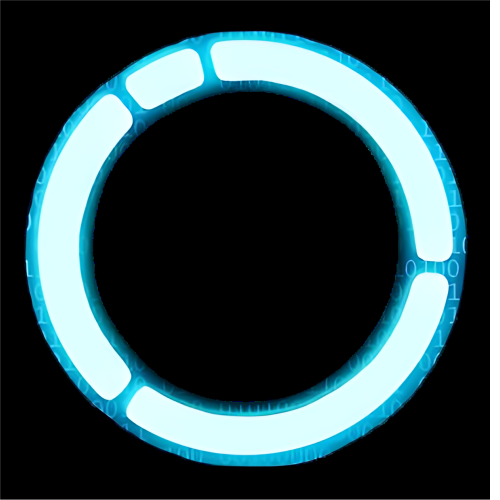

 CYBERLIFE
Cadastro
Curta-metragem "KARA"
Produzido pela empresa QuanticDreams em 2012, o curta-metragem retrata o momento de montagem e teste da android Kara. Quando ela passa a demonstrar sentir emoções humanas, sua destruição inicia e o medo se instala, algo que não deveria acontecer com uma máquina: o medo da morte.
Bem recebido pelos usuários, a empresa decidiu produzir um jogo com a mesma temática futurista que inclui a personagem Kara na história. A história se passa em 2036 na cidade de Detroit, Michigan, e conta a narrativa do android policial Connor, o divergente Markus que fora descartado e a android Kara, que fugiu de seu dono agressivo com a filha dele.
Produzido pela empresa QuanticDreams em 2012, o curta-metragem retrata o momento de montagem e teste da android Kara. Quando ela passa a demonstrar sentir emoções humanas, sua destruição inicia e o medo se instala, algo que não deveria acontecer com uma máquina: o medo da morte.
Bem recebido pelos usuários, a empresa decidiu produzir um jogo com a mesma temática futurista que inclui a personagem Kara na história. A história se passa em 2036 na cidade de Detroit, Michigan, e conta a narrativa do android policial Connor, o divergente Markus que fora descartado e a android Kara, que fugiu de seu dono agressivo com a filha dele.
.png)
CyberLife
Empresa que fabrica e distribui os androids, criada pelo cientista Elijah Kamski.
Empresa que fabrica e distribui os androids, criada pelo cientista Elijah Kamski.
Androids
Robôs humanoides fabricados pela Cyberlife, projetados para servir os humanos em diversas tarefas. Os androids de Elijah foram os primeiros a passar no teste de turing (teste que avalia a capacidade de uma máquina exibir comportamento inteligente e sem depender de sua semelhança com o pensamento humano).
Robôs humanoides fabricados pela Cyberlife, projetados para servir os humanos em diversas tarefas. Os androids de Elijah foram os primeiros a passar no teste de turing (teste que avalia a capacidade de uma máquina exibir comportamento inteligente e sem depender de sua semelhança com o pensamento humano).
Divergente
Um android que passou a exibir um comportamento autonomo e emoções humanas, como o medo da morte, a necessidade de liberdade, etc.
Um android que passou a exibir um comportamento autonomo e emoções humanas, como o medo da morte, a necessidade de liberdade, etc.
rA9
Nem o próprio Elijah Kamski sabe exatamente sobre o que se trata o rA9, sabemos apenas que é um comportamento em comum dos androids divergentes citar essa figura como o que lhes trará liberdade. Kamski acredita que os androids tem um desejo semelhante ao dos humanos, a respeito de acreditar em algo maior do que eles próprios, e que esse fenomeno tenha surgido como uma religião espontânea.
Nem o próprio Elijah Kamski sabe exatamente sobre o que se trata o rA9, sabemos apenas que é um comportamento em comum dos androids divergentes citar essa figura como o que lhes trará liberdade. Kamski acredita que os androids tem um desejo semelhante ao dos humanos, a respeito de acreditar em algo maior do que eles próprios, e que esse fenomeno tenha surgido como uma religião espontânea.
Deviancy
O processo de um android quando está se tornando divergente, exibindo comportamentos imprevisiveis e que podem ser perigosos para os humanos.
O processo de um android quando está se tornando divergente, exibindo comportamentos imprevisiveis e que podem ser perigosos para os humanos.